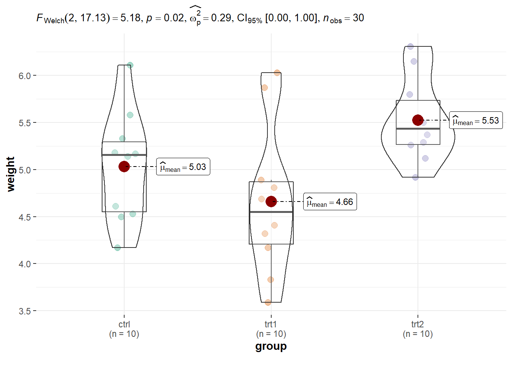

First post
Welcome to my new site.
Introduction
I am working with R, Rstudio, and R Markdown as tools for exploring, documenting, and communicating data. While I’ve written a couple of quantitative papers in the past, I generally relied on GUI based statistical tools like Excel, JMP, or the very nice PAST application. They were ok, but really felt lacking, particularly in terms of laying out plots or documenting work flows. Recently, after a brief sojourn with python and jupyter notebooks, I became interested in learning R as a platform for working with data, generating reproducible results, and communicating them effectively on the internet. While python is a great language, in many ways R and R Markdown seem better suited to my personal needs.
Some time ago, I began shifting my writing from Microsoft Word to Markdown, using Zettlr or Obsidian and combining these with Zotero, the Better BibTex plugin, and Pandoc. Given a writing workflow that entails Markdown-Zotero and an interest in quantitative themes, R and R Markdown seemed like logical tools to explore. I looked at several of the R Markdown platforms like Rpubs as well as packages like bookdown and blogdown. After examining the field, the distill package seemed like a full fledged technical writing tool without some of the hassles that people reported using blogdown/go. So I figured I’d give distill a try. This website was borne out of that process.
An emerging sprout, just starting to grow (see Figure 1). Hopefully treatments will produce positive results (Figure 2).

Reference
Dobson, A. J. (1983) An Introduction to Statistical Modelling. London: Chapman and Hall.